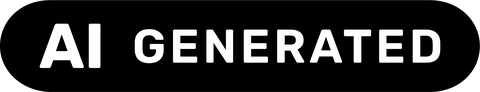
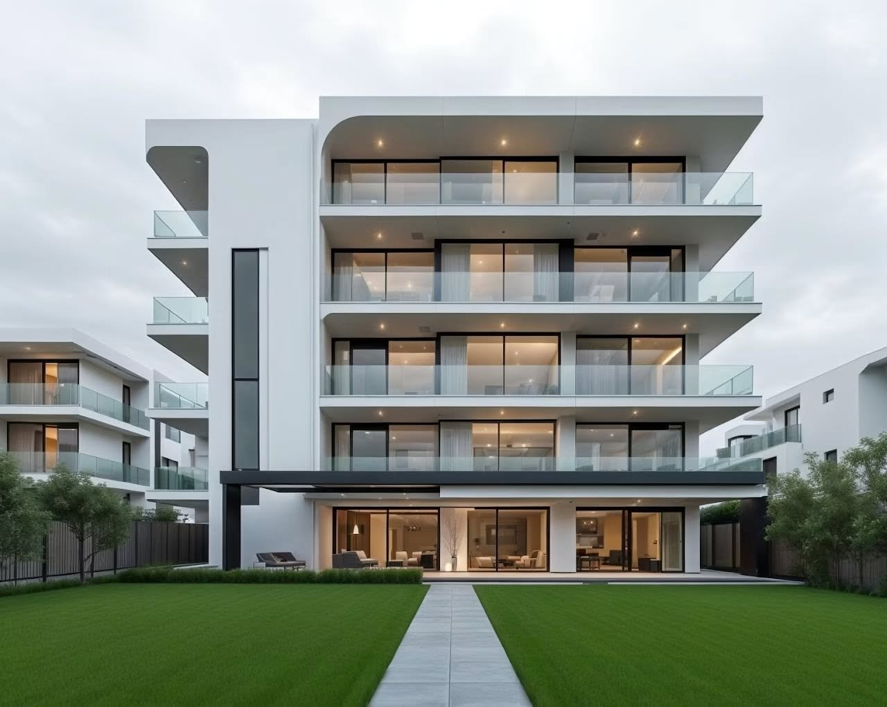

Architect · 20+ years of practice · MOIA RP
Public buildings, competitions, houses and interiors – plus writing and talks on how artificial intelligence, BIM and law are changing the architectural profession.

Latest posts from tomaszgesiak.substack.com